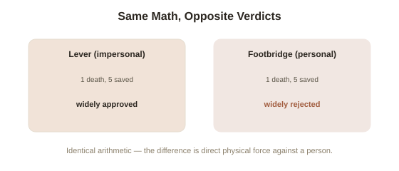

Chapter 3: Trolley Problems and the Two-System Brain
Chapter 2 showed reasoning failing to justify a fixed verdict in a case with no real stakes attached. This chapter covers the classic tool moral philosophy and psychology use to probe judgment at its most extreme — genuinely conflicting, high-stakes hypothetical scenarios — and the neuroscience that eventually explained why two versions of what looks like the same underlying math produce wildly different gut reactions.
The trolley problem and its footbridge twin
Philosopher Philippa Foot introduced the trolley problem in 1967: a runaway trolley is about to kill five people tied to the track ahead. You're standing next to a lever that would divert it onto a side track, where it will kill one person instead. Most people, asked this version, say pulling the lever is the right thing to do — trading one life to save five. Philosopher Judith Jarvis Thomson later added a variation that produces a strikingly different reaction despite identical math: the footbridge dilemma, where the only way to stop the trolley and save the five is to push a large stranger off a footbridge directly into its path, using his body to physically block the trolley. Same numbers — one death prevents five — but most people who happily pull the lever refuse to push the stranger, and often struggle to explain why the two cases feel so different when the underlying arithmetic is identical.
Two ethical frameworks, mapped directly onto the two intuitions
The two dilemmas map cleanly onto a genuine, long-standing split in moral philosophy. Utilitarianism (the ethical view that the right action is whichever produces the best overall outcome — typically the greatest good, or least harm, summed across everyone affected) says both cases should have the same answer: one death for five lives saved is a net positive either way, full stop. Deontology (the ethical view that certain actions are right or wrong based on rules and duties, independent of their consequences — some things, like actively using a person's body as a means to an end, are wrong to do even to bring about a better outcome) can explain the footbridge aversion directly: actively, physically using someone as an instrument to stop the trolley violates a duty not to treat a person merely as a means, in a way that pulling a remote lever, however tragic its side effect, doesn't as directly violate. Most people aren't consistent utilitarians or consistent deontologists across all cases — they show a pattern that shifts between the two frameworks depending on features of the specific scenario, which is exactly what the trolley-versus-footbridge split reveals.

Greene's brain-imaging explanation: two systems, not one inconsistent one
Neuroscientist and philosopher Joshua Greene ran fMRI studies specifically to find out what was actually happening in the brain during the two scenarios, and found a striking, replicated split. Impersonal dilemmas like the lever version primarily activate brain regions associated with controlled, deliberative reasoning — the same prefrontal territory covered elsewhere in this library's discussion of slow, effortful thought. Personal dilemmas like the footbridge version — involving direct, close-up physical force against another person — additionally and strongly activate emotional processing regions, including areas linked to social and emotional response, and this emotional activation correlates with the increased hesitation and higher rate of refusal Greene measured. Greene's interpretation, sometimes called the dual-process theory of moral judgment, proposes that utilitarian-leaning judgments draw more heavily on controlled cognitive processing, while deontological-leaning judgments draw more heavily on fast, automatic emotional reactions — not two competing philosophical positions being reasoned out, but two different cognitive systems producing different outputs, with philosophy arriving afterward to build a justification for whichever one won.
Why this connects directly back to Chapter 2
Greene's brain-imaging work gives moral dumbfounding a plausible underlying mechanism: the footbridge scenario's emotional activation looks very much like the same fast, automatic process generating Chapter 1's foundation-driven intuitions and Chapter 2's fixed verdicts — arriving quickly, powerfully, and largely independent of the slower reasoning that shows up afterward to either endorse or (as in dumbfounding) fail to fully justify it. The trolley and footbridge cases essentially isolate and amplify, under laboratory conditions, the same elephant-and-rider dynamic that Julie and Mark's story revealed with a real-world taboo — this time with brain scans directly showing two different systems lighting up depending on which version of the dilemma is presented.
Try this
Ideas for noticing or testing this in your own life.
- Run both versions of the trolley problem on yourself and notice the felt difference, not just the stated answer — where in your body or reaction does the footbridge version feel different from the lever version?
- Try identifying, in your next moral judgment about a real situation, whether it's closer to a "lever" case (impersonal, calculated) or a "footbridge" case (direct, personal, emotionally loaded) — and notice whether that distinction, rather than the actual stakes, is driving your reaction.
Worth pulling on?
A few loose threads from this chapter — if any of these genuinely grab you, that's a good sign of where to go next.
- Everything covered so far in this topic has been studied overwhelmingly on Western, and specifically American, samples — and cross-cultural work finds real, meaningful variation in exactly which moral intuitions fire strongest. → The subject of the next chapter: cross-cultural moral variation and the limits of a Western-sample-built theory.
- The split between fast, emotionally-driven judgment and slower, deliberate reasoning maps closely onto a much broader dual-process framework used well beyond moral psychology. → Already in the library: Cognitive Biases & Judgment covers Kahneman's System 1 and System 2 as the general-purpose version of this same split.